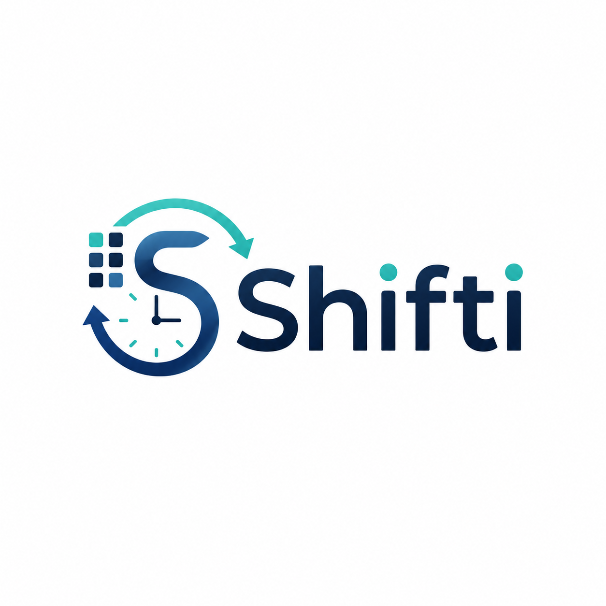

بياناتك ونسختك الاحتياطية
ملف الموظف
Shifti · كل تفاصيل دوامك بمكان واحد
النسخة الاحتياطية الشاملة
كل بيانات Shiftiالتصدير يشمل بيانات الراتب والحضور، التأمين، الجدول، الجمعيات، الإجازات، الدفتر المالي، المهام، التسليم، التدريب وملف الموظف الموجودة على هذا الجهاز.
عن التطبيق

Shifti
كل تفاصيل دوامك بمكان واحد